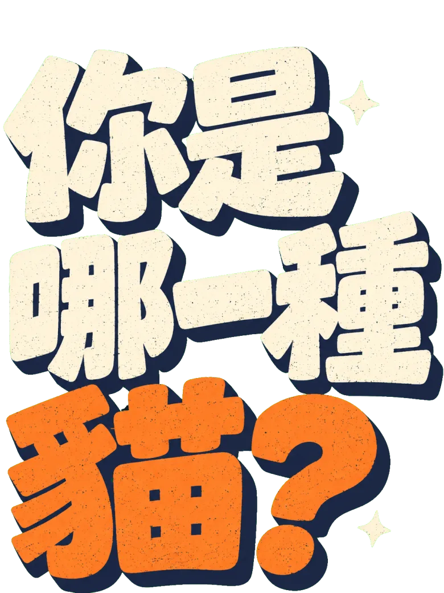
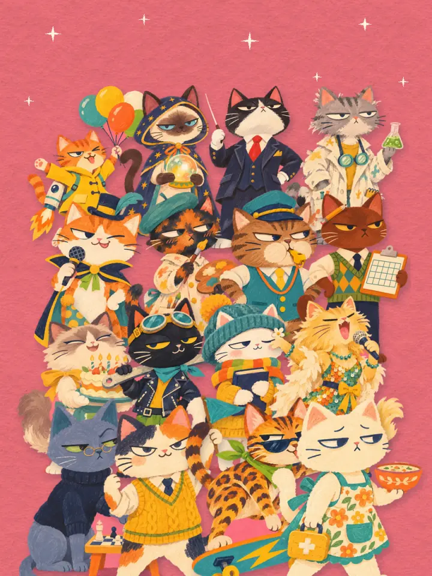
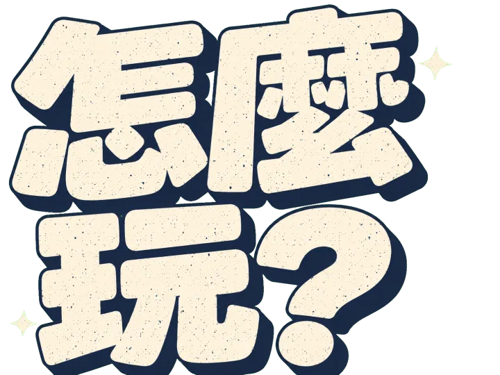

<!doctype html>
<html lang="zh-Hant">
<head>
<meta charset="utf-8">
<meta name="viewport" content="width=device-width, initial-scale=1, viewport-fit=cover">
<meta name="theme-color" content="#F28AA0">
<title>你是哪一種貓？MBTI 貓咪人格測驗</title>
<meta name="description" content="MBTI 16 型人格 × 16 隻貓！20 題情境題，找出你的本命貓，測完分享到 LINE、Facebook、Instagram。">
<link rel="icon" href="favicon.ico" sizes="any">
<link rel="icon" type="image/png" sizes="32x32" href="favicon-32.png">
<link rel="icon" type="image/png" sizes="16x16" href="favicon-16.png">
<link rel="manifest" href="site.webmanifest">
<link rel="apple-touch-icon" href="apple-touch-icon.png">
<meta property="og:type" content="website">
<meta property="og:site_name" content="你是哪一種貓？MBTI 貓咪人格測驗">
<meta property="og:title" content="你是哪一種貓？MBTI 16 型貓咪人格測驗">
<meta property="og:description" content="MBTI 16 型人格 × 16 隻貓！20 題情境題，找出你的本命貓，測完分享到 LINE、Facebook、Instagram。">
<meta property="og:url" content="https://izzy781028.github.io/cat-mbti/">
<meta property="og:image" content="https://izzy781028.github.io/cat-mbti/og/cover.jpg">
<meta property="og:image:width" content="1200">
<meta property="og:image:height" content="630">
<meta name="twitter:card" content="summary_large_image">
<style>
html { box-sizing: border-box; padding-top: env(safe-area-inset-top, 0px); padding-bottom: env(safe-area-inset-bottom, 0px); }
body { margin: 0; }
img { max-width: 100%; }
[hidden] { display: none !important; }
</style>

<link rel="preconnect" href="https://fonts.googleapis.com">
<link rel="preconnect" href="https://fonts.gstatic.com" crossorigin>
<link rel="stylesheet" href="https://fonts.googleapis.com/css2?family=Noto+Sans+TC:wght@400;700;900&display=swap">
<style>
/* 版面：手機單欄（最寬 440），每頁一個畫面；珊瑚粉紙紋＋深藍字＋藍綠主按鈕，單一主題 */
:root {
  --page: #F28AA0;
  --cream: #FFF4E0;
  --navy: #1F2A44;
  --slate: #5A6278;
  --teal: #3FA7A3;
  --mustard: #F2C230;
  --orange: #F27B35;
  --blush: #FBE3E7;
  --backdrop: #2A1F33;
  --ink-scrim: rgba(31, 42, 68, .55);
  --shadow-photo: 0 6px 16px rgba(31, 42, 68, .18);
  --font: "Noto Sans TC", "PingFang TC", "Heiti TC", "Microsoft JhengHei", sans-serif;
  --ease-out: cubic-bezier(.16, 1, .3, 1);
  --ease-back: cubic-bezier(.34, 1.56, .64, 1);
  color-scheme: light;
}
html, body { height: 100%; }
body {
  background: var(--backdrop);
  color: var(--navy);
  font-family: var(--font);
  -webkit-font-smoothing: antialiased;
  -webkit-tap-highlight-color: transparent;
  overflow: hidden;
}
.app {
  position: relative;
  height: 100%;
  max-width: 440px;
  margin: 0 auto;
  overflow: hidden;
  background-color: var(--page);
  background-image: url("img/paper.webp");
  background-size: 384px;
  background-blend-mode: multiply;
  container-type: size;
}
.screen {
  position: absolute;
  inset: 0;
  display: flex;
  flex-direction: column;
  padding-block: 18px 26px;
  padding-left: max(24px, env(safe-area-inset-left, 0px));
  padding-right: max(24px, env(safe-area-inset-right, 0px));
}
.screen.scroll { overflow-y: auto; overscroll-behavior: contain; }
img { display: block; max-width: 100%; }
button { font: inherit; color: inherit; background: none; border: 0; padding: 0; cursor: pointer; }
a { color: inherit; text-decoration: none; }
:focus-visible { outline: 3px solid var(--navy); outline-offset: 3px; border-radius: 12px; }

/* ---------- 進場／離場（兩拍，俐落） ---------- */
[data-beat] { transform: translate(0, 0) rotate(var(--r, 0deg)); }
.screen.enter [data-beat="1"] { animation: beatIn .28s var(--ease-out) .06s both; }
.screen.enter [data-beat="2"] { animation: beatIn .22s var(--ease-back) .24s both; }
.screen.leave { animation: leave .22s var(--ease-out) both; pointer-events: none; }
@keyframes beatIn {
  from { opacity: 0; transform: translate(var(--dx, 0), var(--dy, 26px)) rotate(calc(var(--r, 0deg) + var(--dr, 0deg))); }
  to { opacity: 1; transform: translate(0, 0) rotate(var(--r, 0deg)); }
}
@keyframes leave { to { opacity: 0; transform: translateY(18px); } }
@media (prefers-reduced-motion: reduce) {
  .screen.enter [data-beat], .screen.leave { animation-duration: .01s !important; animation-delay: 0s !important; }
}

/* ---------- 按鈕 ---------- */
.btn {
  display: flex; align-items: center; justify-content: center;
  width: 100%; min-height: 64px; border-radius: 999px;
  font-size: 24px; font-weight: 900; letter-spacing: .02em;
  transition: transform .08s, box-shadow .08s;
}
.btn-primary { background: var(--teal); color: var(--cream); border: 2px solid var(--navy); box-shadow: 0 5px 0 var(--navy); }
.btn-primary:active { transform: translateY(3px); box-shadow: 0 2px 0 var(--navy); }
.btn-secondary { min-height: 56px; font-size: 22px; color: var(--navy); border: 2px solid var(--navy); }
.btn-secondary:active { background: rgba(31, 42, 68, .06); }
.stack { display: flex; flex-direction: column; gap: 12px; }

/* ---------- 首頁 ---------- */
.chip { align-self: flex-start; background: var(--mustard); color: var(--navy); font-weight: 900; font-size: 22px; line-height: 1.1; letter-spacing: .08em; padding: 9px 20px 8px; border-radius: 999px; border: 2px solid var(--navy); box-shadow: 0 4px 0 var(--navy); margin-top: 4px; }
.chip .x { color: var(--orange); margin: 0 .12em; }
.cover-art { position: relative; flex: 1; min-height: 0; margin-block: 10px 22px; }
.cover-title { position: absolute; left: -6px; top: 0; width: 60%; max-height: 46%; object-fit: contain; object-position: left top; z-index: 2; }
.photo { background: var(--cream); border-radius: 26px; padding: 9px; box-shadow: var(--shadow-photo); }
.photo img { width: 100%; height: 100%; object-fit: cover; border-radius: 19px; }
.cover-card { position: absolute; right: 0; bottom: 0; height: 60%; aspect-ratio: 3 / 4; max-width: 74%; }
.sticker {
  position: absolute; left: -48px; top: 62%; width: 100px; height: 100px; border-radius: 50%;
  background: var(--mustard); color: var(--navy); display: grid; place-items: center; text-align: center;
  font-weight: 900; font-size: 20px; line-height: 1.15; transform: rotate(-16deg); box-shadow: 0 3px 0 rgba(31, 42, 68, .25);
}

/* ---------- 說明 ---------- */
.howto-title { width: 74%; margin-top: 18px; }
.steps { display: flex; flex-direction: column; gap: 18px; margin-top: 20px; flex: 1; }
.step { display: flex; align-items: center; gap: 14px; background: var(--cream); border-radius: 22px; padding: 18px 18px; font-size: 19px; font-weight: 700; box-shadow: var(--shadow-photo); }
.step b { flex: none; width: 40px; height: 40px; border-radius: 50%; background: var(--mustard); display: grid; place-items: center; font-weight: 900; font-size: 20px; }
.step:nth-child(2) { margin-left: 10px; }
.step:nth-child(3) { margin-left: 20px; }

/* ---------- 題目 ---------- */
.topbar { display: flex; align-items: center; gap: 10px; min-height: 44px; }
.back { flex: none; width: 44px; height: 44px; margin-left: -12px; display: grid; place-items: center; font-size: 30px; font-weight: 900; border-radius: 50%; }
.back:disabled { opacity: .25; cursor: default; }
.track { flex: 1; height: 10px; border-radius: 5px; background: var(--blush); overflow: hidden; }
.fill { height: 100%; border-radius: 5px; background: var(--mustard); width: 0; transition: width .45s var(--ease-out); }
.count { flex: none; font-weight: 700; font-size: 15px; letter-spacing: .06em; font-variant-numeric: tabular-nums; }
.home { flex: none; min-height: 36px; padding: 0 14px; border-radius: 999px; background: var(--cream); border: 1.5px solid var(--navy); font-weight: 700; font-size: 15px; }
.q-num { display: flex; height: clamp(76px, 13cqh, 124px); margin-top: 4px; }
.q-num img { height: 100%; width: auto; margin-right: -12px; }
.q-num.r1 { align-self: flex-end; }
.q-num.r2 { align-self: flex-start; }
.q-num.r3 { align-self: center; }
.scene { position: relative; align-self: center; width: min(100%, 31cqh * 1.5); aspect-ratio: 3 / 2; margin-top: 12px; }
.scene .photo { position: absolute; inset: 0; border-radius: 22px; padding: 6px; }
.scene .photo img { border-radius: 17px; }
.tape { position: absolute; top: -12px; width: 84px; height: 26px; background: var(--mustard); opacity: .9; transform: translateX(-50%) rotate(var(--tr, 5deg)); z-index: 2; }
.q-text { font-weight: 900; font-size: clamp(24px, 3.7cqh, 32px); line-height: 1.25; margin-top: 18px; text-wrap: balance; }
.spacer { flex: 1; min-height: 12px; }
.option {
  display: flex; align-items: center; gap: 12px; width: 100%; min-height: 64px; text-align: left;
  background: var(--cream); border: 2px solid var(--navy); border-radius: 20px; padding: 12px 18px 12px 12px;
  font-size: 20px; font-weight: 700; line-height: 1.35; transition: background .15s, color .15s, transform .08s;
}
.option .letter { flex: none; width: 38px; height: 38px; border-radius: 50%; background: var(--mustard); display: grid; place-items: center; font-weight: 900; }
.option:active { transform: scale(.98); }
.option.picked { background: var(--orange); color: var(--cream); }
.option.picked .letter { background: var(--cream); color: var(--navy); }

/* ---------- 計算中 ---------- */
.loading { justify-content: center; align-items: center; gap: 22px; text-align: center; }
.loading img { width: 86%; }
.loading p { font-size: 19px; }
.dots { display: flex; gap: 12px; }
.dots i { width: 22px; height: 22px; border-radius: 50%; background: var(--mustard); animation: bounce .9s ease-in-out infinite; }
.dots i:nth-child(2) { animation-delay: .12s; }
.dots i:nth-child(3) { animation-delay: .24s; }
@keyframes bounce { 50% { transform: translateY(-14px); } }

/* ---------- 結果 ---------- */
.res-letters { display: flex; height: clamp(70px, 11cqh, 104px); margin-left: -8px; }
.res-letters img { height: 100%; margin-right: -10px; }
.res-mid { display: flex; align-items: flex-start; gap: 6px; margin-top: 8px; }
.res-mid .pre { flex: 1; font-weight: 900; font-size: 26px; line-height: 1.3; padding-top: 22px; }
.res-card { flex: none; width: min(58%, 26cqh * .75); aspect-ratio: 3 / 4; }
.label { align-self: flex-start; background: var(--mustard); padding: 6px 14px; margin-top: 14px; font-weight: 900; font-size: 24px; }
.quote { font-weight: 900; font-size: 24px; line-height: 1.35; margin-top: 12px; text-wrap: balance; }
.kws { display: flex; flex-wrap: wrap; gap: 8px; margin-top: 12px; }
.kws span { background: var(--blush); border-radius: 999px; padding: 4px 14px; font-weight: 700; font-size: 15px; }
.bars { display: grid; gap: 7px; margin-top: 16px; font-size: 15px; font-weight: 700; }
.bar { display: grid; grid-template-columns: 22px 1fr 22px; align-items: center; gap: 8px; text-align: center; }
.bar .b { position: relative; height: 10px; border-radius: 5px; background: var(--blush); overflow: hidden; }
.bar .b i { position: absolute; top: 0; bottom: 0; background: var(--navy); border-radius: 5px; }
.bar .on { color: var(--navy); }
.bar .off { color: var(--slate); opacity: .6; }
.mate { margin-top: 12px; font-size: 17px; color: var(--slate); }
.res-btns { margin-top: 18px; }
.friend-chip { align-self: flex-start; background: var(--cream); border: 1.5px solid var(--navy); border-radius: 999px; padding: 4px 12px; font-weight: 700; font-size: 14px; margin-bottom: 6px; }

/* ---------- 面板 ---------- */
.scrim { position: absolute; inset: 0; background: var(--ink-scrim); opacity: 0; transition: opacity .2s; z-index: 20; }
.scrim.show { opacity: 1; }
.sheet {
  position: absolute; left: 0; right: 0; bottom: 0; z-index: 21;
  background-color: var(--cream); background-image: url("img/paper.webp"); background-size: 384px; background-blend-mode: multiply;
  border-radius: 28px 28px 0 0; padding: 12px max(24px, env(safe-area-inset-right, 0px)) calc(26px + env(safe-area-inset-bottom, 0px)) max(24px, env(safe-area-inset-left, 0px));
  transform: translateY(100%); transition: transform .32s var(--ease-out);
  display: flex; flex-direction: column; gap: 18px; max-height: 92%; overflow-y: auto;
}
.sheet.show { transform: translateY(0); }
.handle { align-self: center; width: 44px; height: 5px; border-radius: 3px; background: rgba(90, 98, 120, .35); }
.sheet h3 { margin: 0; text-align: center; font-weight: 900; font-size: 24px; }
.sheet p.note { margin: 0; text-align: center; font-size: 16px; color: var(--slate); line-height: 1.5; }
.share-row { display: flex; justify-content: center; gap: 26px; flex-wrap: wrap; }
.share-item { display: flex; flex-direction: column; align-items: center; gap: 8px; font-size: 14px; font-weight: 700; min-width: 64px; }
.share-item .ic { width: 64px; height: 64px; border-radius: 50%; display: grid; place-items: center; color: #FFF; font-weight: 900; font-size: 15px; letter-spacing: .04em; }
.ic.line { background: #06C755; }
.ic.fb { background: #1877F2; font-size: 26px; }
.ic.ig { background: #E1306C; }
.ic.save, .ic.copy { background: var(--teal); font-size: 20px; }
.ig-opts { display: grid; grid-template-columns: 1fr 1fr; gap: 14px; }
.ig-opt { display: flex; flex-direction: column; align-items: center; gap: 10px; padding: 16px 10px; border: 2px solid var(--navy); border-radius: 20px; background: var(--blush); font-weight: 900; font-size: 19px; }
.ig-opt small { font-weight: 700; font-size: 14px; color: var(--slate); }
.thumb { background: var(--page) center / cover no-repeat; border-radius: 10px; box-shadow: var(--shadow-photo); }
.preview-img { align-self: center; max-height: 52cqh; width: auto; border-radius: 16px; box-shadow: var(--shadow-photo); -webkit-touch-callout: default; user-select: auto; }
.linkbox { display: flex; gap: 8px; }
.linkbox input { flex: 1; min-width: 0; font: inherit; font-size: 14px; padding: 10px 12px; border: 1.5px solid var(--navy); border-radius: 12px; background: #FFF; color: var(--navy); }
.toast { position: absolute; left: 50%; bottom: calc(110px + env(safe-area-inset-bottom, 0px)); transform: translate(-50%, 20px); background: var(--navy); color: var(--cream); padding: 10px 18px; border-radius: 999px; font-weight: 700; font-size: 15px; opacity: 0; transition: opacity .2s, transform .2s; z-index: 30; pointer-events: none; white-space: nowrap; }
.toast.show { opacity: 1; transform: translate(-50%, 0); }
.btn-row { display: grid; grid-template-columns: 1fr 1fr; gap: 12px; }

/* ---------- 電腦版：左右兩欄（畫面寬 760 以上） ---------- */
.col-a, .col-b { display: contents; }
@media (min-width: 820px) {
  .app { max-width: 1180px; }
}
@container (min-width: 760px) {
  .screen { padding-block: 34px 40px; padding-left: max(56px, env(safe-area-inset-left, 0px)); padding-right: max(56px, env(safe-area-inset-right, 0px)); }
  .screen.split { display: grid; grid-template-columns: minmax(0, 1.05fr) minmax(0, 1fr); grid-template-rows: auto minmax(0, 1fr); column-gap: 64px; }
  .screen.split > .topbar { grid-column: 1 / -1; }
  .screen.split .col-a, .screen.split .col-b { display: flex; flex-direction: column; justify-content: center; min-height: 0; grid-row: 2; }
  .screen.split .col-a { grid-column: 1; }
  .screen.split .col-b { grid-column: 2; }
  .btn { max-width: 440px; }
  /* 首頁 */
  .screen.cover { display: grid; grid-template-columns: minmax(0, 1fr) minmax(0, 1fr); grid-template-rows: auto minmax(0, 1fr) auto; grid-template-areas: "chip card" "title card" "btn card"; column-gap: 64px; row-gap: 22px; align-items: center; }
  .cover .chip { grid-area: chip; justify-self: start; font-size: 30px; padding: 12px 26px 11px; box-shadow: 0 5px 0 var(--navy); }
  .cover .cover-art { display: contents; }
  .cover .cover-title { position: static; grid-area: title; width: 100%; max-height: 54cqh; object-position: left center; }
  .cover .cover-card { position: relative; grid-area: card; height: auto; width: min(100%, 66cqh * .75); max-width: none; justify-self: center; }
  .cover .sticker { width: 130px; height: 130px; left: -64px; font-size: 26px; }
  .cover #startBtn { grid-area: btn; }
  /* 說明 */
  .howto-title { width: 100%; margin: 0; }
  .split .steps { flex: none; margin: 0 0 32px; }
  /* 題目 */
  .question .q-num { height: clamp(96px, 16cqh, 160px); }
  .question .scene { width: 100%; margin-top: 18px; }
  .question .q-text { font-size: clamp(28px, 4.4cqh, 40px); margin: 0 0 32px; }
  .question .spacer { display: none; }
  /* 結果 */
  .result .res-letters { height: clamp(90px, 14cqh, 130px); }
  .result .res-card { width: min(66%, 56cqh * .75); }
  .result .res-mid .pre { font-size: 30px; }
  .result .label { margin-top: 0; font-size: 28px; }
  .result .quote { font-size: 28px; }
  /* 面板改為置中對話框 */
  .sheet { left: 50%; right: auto; bottom: 28px; width: 480px; border-radius: 28px; transform: translate(-50%, calc(100% + 40px)); padding-bottom: 26px; }
  .sheet.show { transform: translate(-50%, 0); }
  .preview-img { max-height: 46cqh; }
}
</style>
</head>
<body>

<div class="app" id="app">
  <div id="stage"></div>
  <div class="scrim" id="scrim" hidden></div>
  <div class="sheet" id="sheet" role="dialog" aria-modal="true" hidden></div>
  <div class="toast" id="toast" role="status" aria-live="polite"></div>
</div>

<script>
(() => {
  // 發佈後填入這個網頁的公開網址，分享連結會用它
  const SHARE_BASE = "https://izzy781028.github.io/cat-mbti/";

  const Q = [
    ["週五晚上，你最想…", "揪一群朋友去熱鬧的地方", "窩進紙箱裡，誰都別找我"],
    ["走進一個都是陌生人的派對", "先去每個人腳邊蹭一圈打招呼", "跳上高處，默默觀察全場"],
    ["累了一整天，你怎麼充電？", "找人聊天，越聊越有精神", "一個人安靜待著，電才會滿"],
    ["手機群組訊息 99+", "立刻加入聊天，順便揪團", "先開靜音，晚點再看"],
    ["放假第一天，你的理想行程是…", "約滿一整天，越熱鬧越好", "什麼都不排，在家耍廢"],
    ["拿到一個新玩具，你會…", "先看說明，實際玩玩看", "開始想它還能拿來做什麼"],
    ["朋友問路，你通常回答…", "「第二個路口左轉，看到超商就到了」", "「往那邊走，感覺對了就是了」"],
    ["發呆的時候，你在想…", "晚餐要吃什麼罐罐", "如果貓統治世界會怎樣"],
    ["看電影的時候，你比較在意…", "劇情合不合理、細節對不對", "背後的隱喻和彩蛋"],
    ["學一個新東西，你喜歡…", "一步一步照著做", "先抓大概，邊做邊想像"],
    ["朋友打翻了你的罐罐", "先想怎麼補救、下次怎麼避免", "先看朋友是不是嚇到了"],
    ["做決定時，你比較相信…", "數據和邏輯", "心裡的感覺"],
    ["朋友給你看他畫的圖，畫得不太好", "直接說哪裡可以改", "先誇他很用心，再委婉建議"],
    ["朋友的新髮型其實不太適合", "老實說，再給建議", "先說好看，改天再暗示"],
    ["團隊吵架的時候，你會…", "把事情講清楚，對事不對人", "先讓大家心情平復"],
    ["出門旅行前", "行程排到幾點吃飯都寫好", "買好機票就好，其他到了再說"],
    ["你的房間（或貓砂盆）通常…", "每樣東西都有固定位置", "亂中有序，只有我找得到"],
    ["截止日前一週，你…", "已經做完一半了", "截止前一晚爆發小宇宙"],
    ["去餐廳點餐", "早就看好菜單決定了", "到現場看感覺再點"],
    ["突然被約今晚出去玩", "有點煩，打亂我的計畫", "好啊！臨時的最好玩"],
  ];
  const R = {
    INTJ: ["建築師", "西洋棋藍貓", "三步之後的事，我早就想好了。", ["策略", "獨立", "冷靜"], "ENFP"],
    INTP: ["邏輯學家", "實驗室灰虎斑", "等等，這個為什麼會這樣？", ["好奇", "分析", "放空"], "ENTJ"],
    ENTJ: ["指揮官", "西裝賓士貓", "照我說的做，效率最高。", ["果斷", "領導", "目標"], "INTP"],
    ENTP: ["辯論家", "魔術師橘白貓", "我只是想看你會怎麼反駁。", ["機智", "點子多", "愛抬槓"], "INFJ"],
    INFJ: ["提倡者", "占星暹羅貓", "我早就感覺到會這樣了。", ["洞察", "理想", "神秘"], "ENTP"],
    INFP: ["調停者", "詩人白貓", "讓我再發呆一下下。", ["浪漫", "溫柔", "想像力"], "ENFJ"],
    ENFJ: ["主人公", "班導三花貓", "你可以的！我相信你！", ["熱情", "鼓勵", "照顧人"], "INFP"],
    ENFP: ["競選者", "氣球橘虎斑", "好啊好啊！現在就出發！", ["熱情", "自由", "點子王"], "INTJ"],
    ISTJ: ["物流師", "行事曆緬甸貓", "計畫表上沒寫的事，不做。", ["可靠", "守時", "仔細"], "ESFP"],
    ISFJ: ["守衛者", "熱湯奶油貓", "你吃飽了嗎？要不要喝湯？", ["體貼", "細心", "守護"], "ESTP"],
    ESTJ: ["總經理", "吹哨棕虎斑", "集合！照規矩來！", ["務實", "組織", "直接"], "ISFP"],
    ESFJ: ["執政官", "派對布偶貓", "大家都要開心喔！", ["熱心", "社交", "顧氣氛"], "ISTP"],
    ISTP: ["鑑賞家", "機車黑貓", "壞了？給我五分鐘。", ["冷靜", "動手", "獨行"], "ESFJ"],
    ISFP: ["探險家", "畫家玳瑁貓", "我只是想畫下這個顏色。", ["敏感", "藝術", "自在"], "ESTJ"],
    ESTP: ["企業家", "滑板豹貓", "先做再說，想太多會老。", ["大膽", "行動", "刺激"], "ISFJ"],
    ESFP: ["表演者", "舞台金毛貓", "舞台燈呢？我準備好了！", ["熱鬧", "表演", "享受當下"], "ISTJ"],
  };
  const DIMS = [["E", "I"], ["S", "N"], ["T", "F"], ["J", "P"]];
  const TILT = ["-6deg", "4deg", "-3deg", "5deg"];

  const stage = document.getElementById("stage");
  const sheet = document.getElementById("sheet");
  const scrim = document.getElementById("scrim");
  const toast = document.getElementById("toast");
  let answers = new Array(20).fill(null);
  let current = null;
  let busy = false;

  // ---------- 計分 ----------
  function score(ans) {
    const counts = [0, 1, 2, 3].map(d => ans.slice(d * 5, d * 5 + 5).filter(a => a === "A").length);
    const code = counts.map((c, d) => (c >= 3 ? DIMS[d][0] : DIMS[d][1])).join("");
    return { code, counts };
  }

  // ---------- 畫面切換 ----------
  function show(html, opts = {}) {
    const el = document.createElement("section");
    el.className = "screen enter" + (opts.scroll ? " scroll" : "") + (opts.cls ? " " + opts.cls : "");
    el.innerHTML = html;
    if (current) {
      const old = current;
      old.classList.remove("enter");
      old.classList.add("leave");
      setTimeout(() => old.remove(), 230);
    }
    stage.appendChild(el);
    current = el;
    if (opts.bind) opts.bind(el);
    const focusable = el.querySelector("[data-autofocus]");
    if (focusable) focusable.focus({ preventScroll: true });
    return el;
  }

  // ---------- 首頁 ----------
  function cover() {
    closeSheet(true);
    answers = new Array(20).fill(null);
    show(`
      <span class="chip" data-beat="1" style="--r:-4deg;--dx:-24px;--dy:0">MBTI<span class="x">×</span>CATS</span>
      <div class="cover-art">
        
        <div class="cover-card" data-beat="1" style="--r:4deg;--dr:8deg;--dy:60px">
          <div class="photo" style="height:100%"></div>
          <div class="sticker" aria-hidden="true">20 題<br>5 分鐘</div>
        </div>
      </div>
      <button class="btn btn-primary" id="startBtn" data-beat="2" data-autofocus>開始測驗</button>
    `, { cls: "cover", bind: el => el.querySelector("#startBtn").onclick = intro });
    setHash("");
  }

  function intro() {
    show(`
      <div class="col-a"></div>
      <div class="col-b">
      <div class="steps">
        <div class="step" data-beat="1" style="--r:-2deg;--dx:80px;--dy:0"><b>1</b>20 題情境題，每題二選一</div>
        <div class="step" data-beat="1" style="--r:2deg;--dx:110px;--dy:0"><b>2</b>憑直覺選，不要想太久</div>
        <div class="step" data-beat="1" style="--r:-1deg;--dx:140px;--dy:0"><b>3</b>看結果，分享你的本命貓</div>
      </div>
      <button class="btn btn-primary" id="readyBtn" data-beat="2" data-autofocus>我準備好了</button>
      </div>
    `, { cls: "split", bind: el => el.querySelector("#readyBtn").onclick = () => question(0) });
  }

  // ---------- 題目 ----------
  function question(i) {
    busy = false;
    const [q, a, b] = Q[i];
    const rhythm = (i % 3) + 1;
    const tilt = rhythm === 2 ? 3 : -3;
    const tapeX = { 1: 50, 2: 28, 3: 72 }[rhythm];
    const pick = answers[i];
    const el = show(`
      <div class="topbar">
        <button class="back" id="backBtn" aria-label="上一題" ${i === 0 ? "" : ""}>‹</button>
        <div class="track" role="progressbar" aria-valuemin="0" aria-valuemax="20" aria-valuenow="${i + 1}"><div class="fill" id="fill"></div></div>
        <span class="count">${i + 1} / 20</span>
        <button class="home" id="homeBtn">回首頁</button>
      </div>
      <div class="col-a">
      <div class="q-num r${rhythm}" data-beat="1" style="--dx:60px;--dy:0" aria-hidden="true">${String(i + 1).padStart(2, "0").split("").map((d, k) => ``).join("")}</div>
      <div class="scene" data-beat="1" style="--r:${tilt}deg;--dr:${tilt * 2}deg;--dy:40px">
        <div class="photo"></div>
        <i class="tape" style="left:${tapeX}%;--tr:${rhythm === 2 ? -7 : 6}deg"></i>
      </div>
      </div>
      <div class="col-b">
      <h2 class="q-text" data-beat="1">${q}</h2>
      <div class="spacer"></div>
      <div class="stack" data-beat="2" style="--dy:60px">
        <button class="option ${pick === "A" ? "picked" : ""}" data-ans="A"><span class="letter">A</span><span>${a}</span></button>
        <button class="option ${pick === "B" ? "picked" : ""}" data-ans="B"><span class="letter">B</span><span>${b}</span></button>
      </div>
      </div>
    `, { cls: "split question" });
    const fill = el.querySelector("#fill");
    const prev = Math.max(i, 1) / 20 * 100;
    fill.style.width = (i === 0 ? 0 : (i / 20) * 100) + "%";
    requestAnimationFrame(() => requestAnimationFrame(() => { fill.style.width = ((i + 1) / 20) * 100 + "%"; }));
    preload([i + 2, i + 3].filter(n => n <= 20).flatMap(n => [`img/scenes/${String(n).padStart(2, "0")}.webp`, ...String(n).padStart(2, "0").split("").map(d => `img/type/d${d}.webp`)]));
    el.querySelector("#backBtn").onclick = () => (i === 0 ? intro() : question(i - 1));
    el.querySelector("#homeBtn").onclick = confirmHome;
    el.querySelectorAll(".option").forEach(btn => btn.onclick = () => {
      if (busy) return;
      busy = true;
      el.querySelectorAll(".option").forEach(o => o.classList.remove("picked"));
      btn.classList.add("picked");
      answers[i] = btn.dataset.ans;
      setTimeout(() => (i < 19 ? question(i + 1) : loading()), 170);
    });
  }

  function confirmHome() {
    openSheet(`
      <div class="handle"></div>
      <h3>要放棄這次作答嗎？</h3>
      <p class="note">回到首頁後，目前選過的答案不會保留。</p>
      <div class="btn-row">
        <button class="btn btn-secondary" id="stay">繼續作答</button>
        <button class="btn btn-primary" id="leave" style="min-height:56px;font-size:22px">回首頁</button>
      </div>
    `, s => {
      s.querySelector("#stay").onclick = () => closeSheet();
      s.querySelector("#leave").onclick = () => cover();
    });
  }

  // ---------- 計算中 ----------
  function loading() {
    show(`
      <div class="loading screen" style="position:static;padding:0;flex:1">
        
        <div class="dots" aria-hidden="true"><i></i><i></i><i></i></div>
        <p data-beat="2">正在翻 16 隻貓的履歷</p>
      </div>
    `);
    const { code, counts } = score(answers);
    preload([`img/cats/${code}.webp`, ...code.split("").map(L => `img/type/${L}.webp`)]);
    setTimeout(() => result(code, counts, false), 1500);
  }

  // ---------- 結果 ----------
  function result(code, counts, friend) {
    const [role, cat, line, kws, mate] = R[code];
    const bars = counts ? DIMS.map(([L, Rr], d) => {
      const left = counts[d], right = 5 - left, winL = left >= 3;
      return `<div class="bar"><span class="${winL ? "on" : "off"}">${L}</span><span class="b"><i style="${winL ? `left:0;width:${left * 20}%` : `right:0;width:${right * 20}%`}"></i></span><span class="${winL ? "off" : "on"}">${Rr}</span></div>`;
    }).join("") : "";
    const el = show(`
      <div class="col-a">
      ${friend ? `<span class="friend-chip" data-beat="1">朋友的本命貓</span>` : ""}
      <div class="res-letters" data-beat="1" style="--dy:-50px" role="img" aria-label="${code}">
        ${code.split("").map((L, k) => ``).join("")}
      </div>
      <div class="res-mid">
        <div class="pre" data-beat="1" style="--dx:-30px;--dy:0">${friend ? "朋友的<br>本命貓<br>是" : "你的<br>本命貓<br>是"}</div>
        <div class="res-card" data-beat="1" style="--r:4deg;--dr:-12deg;--dx:90px;--dy:0">
          <div class="photo" style="height:100%"></div>
        </div>
      </div>
      </div>
      <div class="col-b">
      <div class="label" data-beat="2" style="--r:2deg;--dx:-140px;--dy:0">${role}｜${cat}</div>
      <p class="quote" data-beat="2">「${line}」</p>
      <div class="kws" data-beat="2">${kws.map(k => `<span>${k}</span>`).join("")}</div>
      ${bars ? `<div class="bars" data-beat="2" aria-label="四個維度的傾向，每個維度 5 題">${bars}</div>` : ""}
      <p class="mate" data-beat="2">最佳拍檔：${mate} ${R[mate][1]}</p>
      <div class="stack res-btns" data-beat="2" style="--dy:50px">
        ${friend
          ? `<button class="btn btn-primary" id="tryBtn">我也要測</button>`
          : `<button class="btn btn-primary" id="shareBtn">分享我的貓</button><button class="btn btn-secondary" id="retryBtn">重新測驗</button>`}
      </div>
      </div>
    `, { scroll: true, cls: "split result" });
    setHash(code.toLowerCase());
    if (friend) el.querySelector("#tryBtn").onclick = cover;
    else {
      el.querySelector("#shareBtn").onclick = () => shareMenu(code);
      el.querySelector("#retryBtn").onclick = cover;
    }
  }

  // ---------- 分享 ----------
  const shareUrl = code => `${SHARE_BASE}t/${code.toLowerCase()}.html`;
  function shareMenu(code) {
    const url = shareUrl(code);
    const text = `我是${R[code][1]}（${code}）！測測你是哪一種貓？`;
    openSheet(`
      <div class="handle"></div>
      <h3>分享我的貓</h3>
      <div class="share-row">
        <a class="share-item" href="https://social-plugins.line.me/lineit/share?url=${encodeURIComponent(url)}&text=${encodeURIComponent(text)}" target="_blank" rel="noopener"><span class="ic line">LINE</span>LINE</a>
        <a class="share-item" href="https://www.facebook.com/sharer/sharer.php?u=${encodeURIComponent(url)}" target="_blank" rel="noopener"><span class="ic fb">f</span>Facebook</a>
        <button class="share-item" id="igBtn"><span class="ic ig">IG</span>Instagram</button>
      </div>
      <div class="share-row">
        <button class="share-item" id="saveBtn"><span class="ic save">↓</span>存分享圖</button>
        <button class="share-item" id="copyBtn"><span class="ic copy">⧉</span>複製連結</button>
      </div>
      <button class="btn btn-secondary" id="cancelBtn">取消</button>
    `, s => {
      s.querySelector("#igBtn").onclick = () => igMenu(code);
      s.querySelector("#saveBtn").onclick = () => preview(code, "story", "存分享圖");
      s.querySelector("#copyBtn").onclick = () => copy(url);
      s.querySelector("#cancelBtn").onclick = () => closeSheet();
    });
  }

  function igMenu(code) {
    openSheet(`
      <div class="handle"></div>
      <h3>分享到 Instagram</h3>
      <div class="ig-opts">
        <button class="ig-opt" id="storyBtn"><span class="thumb" style="width:64px;height:114px;background-image:url(img/cats/${code}.webp)"></span>限時動態<small>9:16 直式</small></button>
        <button class="ig-opt" id="postBtn"><span class="thumb" style="width:88px;height:110px;background-image:url(img/cats/${code}.webp)"></span>貼文<small>4:5 直式</small></button>
      </div>
      <button class="btn btn-secondary" id="backBtn2">返回</button>
    `, s => {
      s.querySelector("#storyBtn").onclick = () => preview(code, "story", "限時動態");
      s.querySelector("#postBtn").onclick = () => preview(code, "post", "貼文");
      s.querySelector("#backBtn2").onclick = () => shareMenu(code);
    });
  }

  async function preview(code, kind, label) {
    openSheet(`
      <div class="handle"></div>
      <h3>正在畫你的分享圖…</h3>
    `);
    let dataUrl = "";
    try { dataUrl = await drawShare(code, kind); } catch (e) { dataUrl = ""; }
    const url = shareUrl(code);
    openSheet(`
      <div class="handle"></div>
      <h3>${label === "存分享圖" ? "你的分享圖" : `Instagram ${label}`}</h3>
      ${dataUrl ? `` : `<p class="note">分享圖畫不出來，請重新試一次。</p>`}
      <p class="note">手機：長按圖片 →「加入照片」，再到 Instagram 發佈${label === "貼文" ? "貼文" : "限時動態"}。<br>電腦：在圖片上按右鍵另存。</p>
      <div class="linkbox"><input id="linkInput" value="${url}" readonly aria-label="分享連結"><button class="btn btn-primary" id="copyBtn2" style="width:auto;min-height:44px;padding:0 16px;font-size:16px;box-shadow:0 3px 0 var(--navy)">複製</button></div>
      <button class="btn btn-secondary" id="doneBtn">完成</button>
    `, s => {
      s.querySelector("#copyBtn2").onclick = () => copy(url, s.querySelector("#linkInput"));
      s.querySelector("#doneBtn").onclick = () => closeSheet();
    });
  }

  async function copy(text, input) {
    try { await navigator.clipboard.writeText(text); flash("已複製連結"); }
    catch (e) {
      if (input) { input.focus(); input.select(); flash("已選取連結，請手動複製"); }
      else flash("無法自動複製：" + text);
    }
  }

  // ---------- 分享圖（canvas） ----------
  const imgCache = {};
  const loadImg = src => imgCache[src] || (imgCache[src] = new Promise((res, rej) => { const im = new Image(); im.onload = () => res(im); im.onerror = rej; im.src = src; }));
  function rr(ctx, x, y, w, h, r) {
    ctx.beginPath(); ctx.moveTo(x + r, y); ctx.arcTo(x + w, y, x + w, y + h, r); ctx.arcTo(x + w, y + h, x, y + h, r);
    ctx.arcTo(x, y + h, x, y, r); ctx.arcTo(x, y, x + w, y, r); ctx.closePath();
  }
  function wrapLines(ctx, text, maxW) {
    const lines = []; let line = "";
    for (const ch of text) { const t = line + ch; if (ctx.measureText(t).width > maxW && line) { lines.push(line); line = ch; } else line = t; }
    if (line) lines.push(line); return lines;
  }
  async function drawShare(code, kind) {
    const W = 1080, H = kind === "story" ? 1920 : 1350;
    await Promise.all(["900 60px", "700 40px"].map(f => document.fonts.load(`${f} "Noto Sans TC"`)));
    const [paper, cat, ...letters] = await Promise.all([loadImg("img/paper.webp"), loadImg(`img/cats/${code}.webp`), ...code.split("").map(L => loadImg(`img/type/${L}.webp`))]);
    const c = document.createElement("canvas"); c.width = W; c.height = H;
    const ctx = c.getContext("2d");
    const css = n => getComputedStyle(document.documentElement).getPropertyValue(n).trim();
    ctx.fillStyle = css("--page"); ctx.fillRect(0, 0, W, H);
    ctx.globalCompositeOperation = "multiply"; ctx.fillStyle = ctx.createPattern(paper, "repeat"); ctx.fillRect(0, 0, W, H);
    ctx.globalCompositeOperation = "source-over";
    const story = kind === "story";
    const top = story ? 230 : 70;
    ctx.fillStyle = css("--navy"); ctx.textAlign = "center"; ctx.textBaseline = "top";
    ctx.font = `700 40px "Noto Sans TC", sans-serif`; ctx.fillText("你是哪一種貓？", W / 2, top);
    // 照片卡
    const cw = story ? 600 : 470, ch = Math.round(cw * 4 / 3), cy = top + (story ? 90 : 76);
    ctx.save(); ctx.translate(W / 2, cy + ch / 2); ctx.rotate(4 * Math.PI / 180);
    ctx.shadowColor = "rgba(31,42,68,.22)"; ctx.shadowBlur = 36; ctx.shadowOffsetY = 14;
    ctx.fillStyle = css("--cream"); rr(ctx, -cw / 2, -ch / 2, cw, ch, 44); ctx.fill();
    ctx.shadowColor = "transparent";
    const p = 18; rr(ctx, -cw / 2 + p, -ch / 2 + p, cw - 2 * p, ch - 2 * p, 30); ctx.clip();
    const iw = cw - 2 * p, ih = ch - 2 * p, s = Math.max(iw / cat.width, ih / cat.height);
    ctx.drawImage(cat, -iw / 2 + (iw - cat.width * s) / 2, -ih / 2 + (ih - cat.height * s) / 2, cat.width * s, cat.height * s);
    ctx.restore();
    // 字母
    const ls = story ? 200 : 160, step = ls * .86, lx = W / 2 - (step * 3 + ls) / 2, ly = cy + ch - (story ? 40 : 34);
    letters.forEach((im, k) => { ctx.save(); ctx.translate(lx + k * step + ls / 2, ly + ls / 2); ctx.rotate(parseFloat(TILT[k]) * Math.PI / 180); ctx.drawImage(im, -ls / 2, -ls / 2, ls, ls); ctx.restore(); });
    // 名稱貼條
    const [role, catName, line] = R[code];
    let y = ly + ls + (story ? 30 : 18);
    ctx.font = `900 ${story ? 54 : 46}px "Noto Sans TC", sans-serif`;
    const label = `${role}｜${catName}`, lw = ctx.measureText(label).width + 56, lh = story ? 84 : 72;
    ctx.save(); ctx.translate(W / 2, y + lh / 2); ctx.rotate(2 * Math.PI / 180);
    ctx.fillStyle = css("--mustard"); ctx.fillRect(-lw / 2, -lh / 2, lw, lh);
    ctx.fillStyle = css("--navy"); ctx.textBaseline = "middle"; ctx.fillText(label, 0, 2); ctx.restore();
    y += lh + (story ? 34 : 22);
    ctx.font = `900 ${story ? 48 : 40}px "Noto Sans TC", sans-serif`; ctx.textBaseline = "top"; ctx.fillStyle = css("--navy");
    wrapLines(ctx, `「${line}」`, W - 200).forEach((t, k) => ctx.fillText(t, W / 2, y + k * (story ? 66 : 54)));
    if (story) { ctx.font = `700 38px "Noto Sans TC", sans-serif`; ctx.fillText("測測你是哪一種貓 →", W / 2, H - 330); }
    return c.toDataURL("image/jpeg", .9);
  }

  // ---------- 面板、提示 ----------
  function openSheet(html, bind) {
    scrim.hidden = false; sheet.hidden = false;
    sheet.innerHTML = html;
    requestAnimationFrame(() => { scrim.classList.add("show"); sheet.classList.add("show"); });
    if (bind) bind(sheet);
    scrim.onclick = () => closeSheet();
  }
  function closeSheet(instant) {
    scrim.classList.remove("show"); sheet.classList.remove("show");
    const done = () => { scrim.hidden = true; sheet.hidden = true; sheet.innerHTML = ""; };
    if (instant) done(); else setTimeout(done, 300);
  }
  let toastTimer;
  function flash(msg) { toast.textContent = msg; toast.classList.add("show"); clearTimeout(toastTimer); toastTimer = setTimeout(() => toast.classList.remove("show"), 1800); }
  document.addEventListener("keydown", e => { if (e.key === "Escape" && !sheet.hidden) closeSheet(); });

  // ---------- 網址：#intj 這類連結直接看朋友的結果 ----------
  let settingHash = false;
  function setHash(h) {
    settingHash = true;
    try { history.replaceState(null, "", h ? "#" + h : location.pathname + location.search); } catch (e) { location.hash = h; }
    setTimeout(() => (settingHash = false), 0);
  }
  function route() {
    if (settingHash) return;
    const h = (location.hash || "").slice(1).toUpperCase();
    if (R[h]) { closeSheet(true); result(h, null, true); }
  }
  window.addEventListener("hashchange", route);

  const preloaded = new Set();
  function preload(list) { list.forEach(src => { if (preloaded.has(src)) return; preloaded.add(src); const im = new Image(); im.decoding = "async"; im.src = src; }); }
  // 預先載入第一屏與分享會用到的圖片
  preload(["img/type/title.webp", "img/cover.webp", "img/paper.webp"]);
  setTimeout(() => preload(["img/type/howto.webp", "img/scenes/01.webp", "img/scenes/02.webp", "img/type/d0.webp", "img/type/d1.webp", "img/type/d2.webp", "img/type/matching.webp"]), 600);

  const start = () => { const h = (location.hash || "").slice(1).toUpperCase(); if (R[h]) result(h, null, true); else cover(); };
  start();
})();
</script>

</body>
</html>
